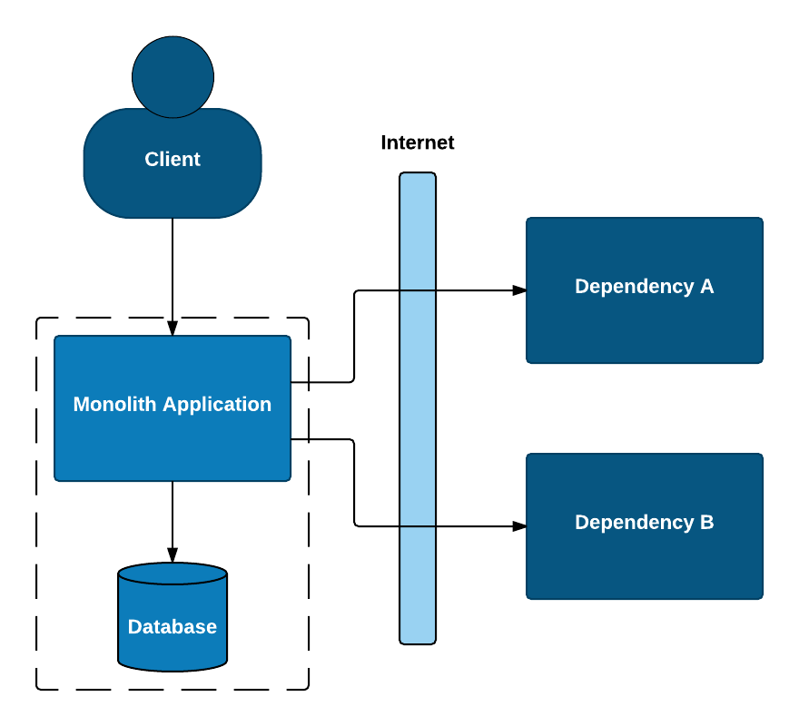
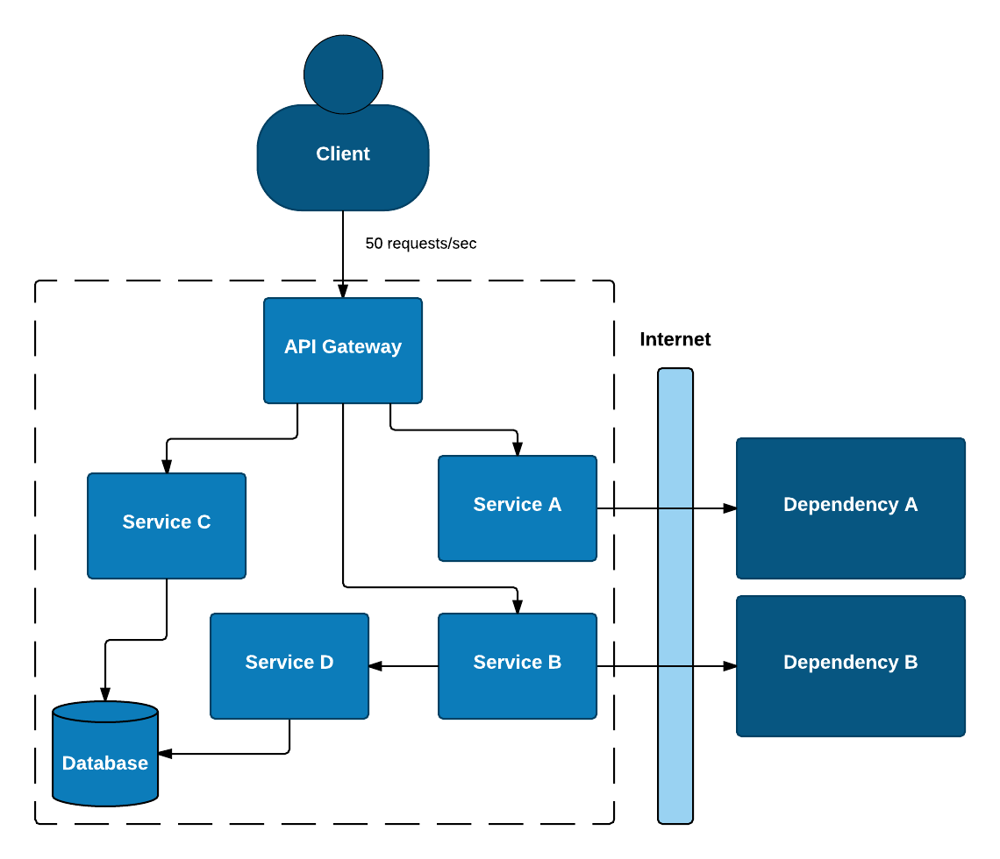
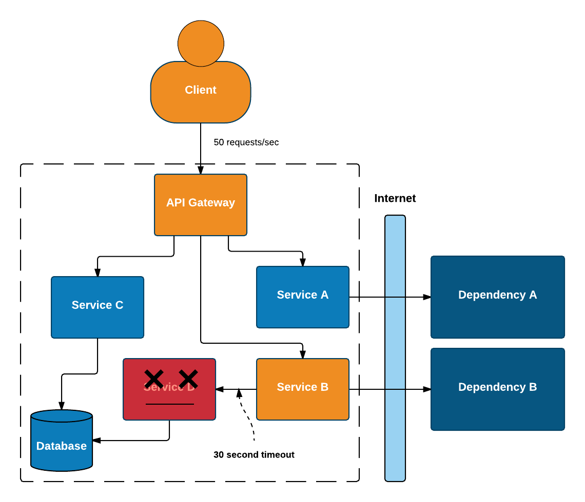
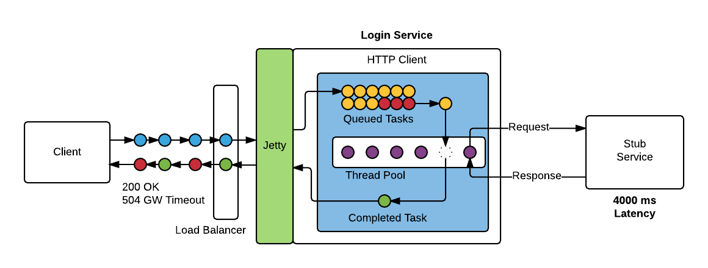
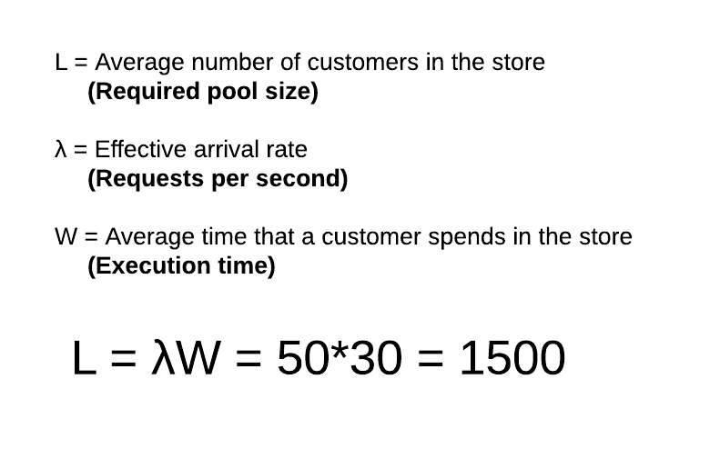

Block one
Embracing failure with Circuit Breaker Hystrix
Monolith Application
Splitting up a monolith is difficult
Defining bounded contexts
Defining interfaces between new microservices
Architecture without transactions
Asynchronous execution
The list goes on…
Many developers (at least the ones I have spoken to) are not experienced in developing highly distributed systems.
Microservices are developed as if it is still a monolith.
Network communication is handled like method calls in the monolith.
This is however very far from reality. Many more moving parts with the added complexity of network is a failure waiting to happen unless handled properly.



What can go wrong?
Slow Response
Blocked Threads
Cascading Failure
Thread Contention
Slow response → Blocked threads → Thread contention → Cascading failure

How big should our thread pool be?
Little’s law says that the number of requests in a system equals the rate at which they arrive, multiplied by the average amount of time it takes to service an individual request.

Little’s Law

Quality Attributes
Distribueret software, hvad kan gå galt? Release it.
Normal circuit breaker diagram
Hystrix CB diagram
Hystrix dashboard?
Forklaring på hystrix commands wrapper
Tråde? Thread contention?
Diagram over demo app
This paragraph is displayed first.
Then this paragraph is displayed when the Next arrow is clicked.
Stepped list items
test
Test
A bullet is displayed each time the Next arrow is clicked.
B
C
Stepped blocks
Block two